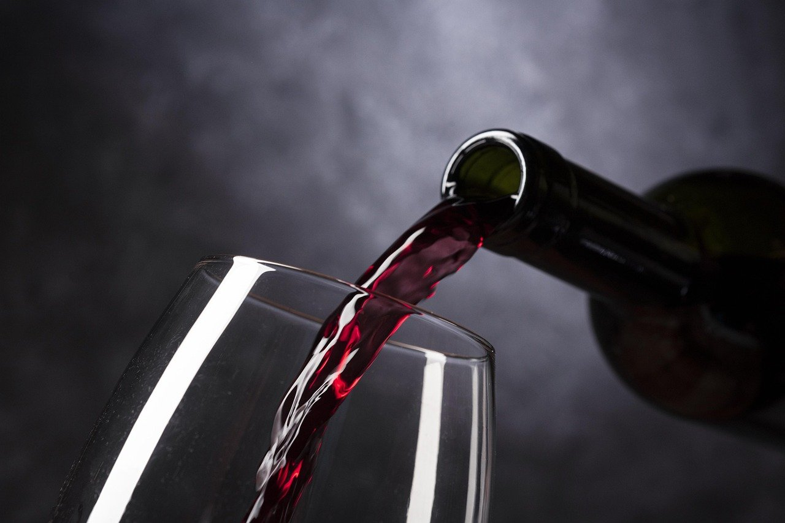
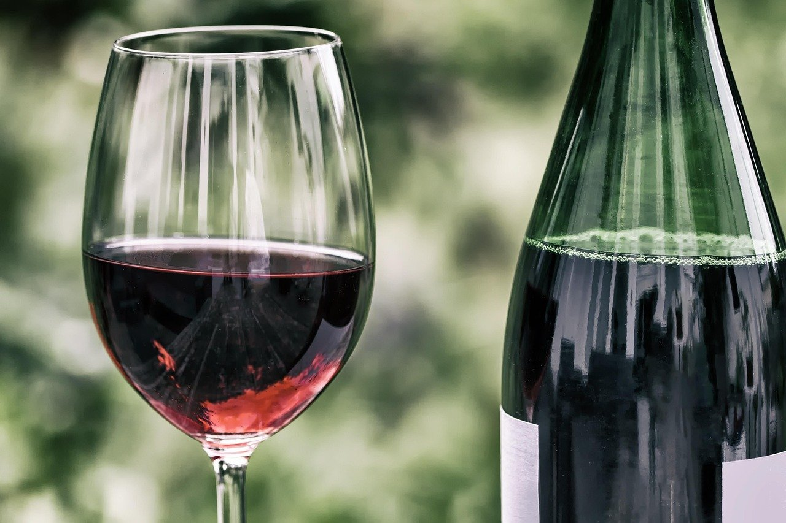
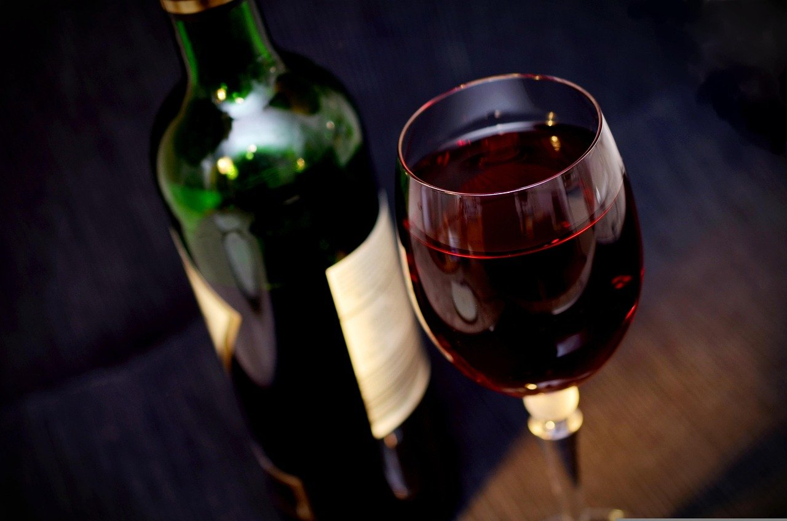

Vin Murfatlar
Sticle Murfatlar pentru cina de acasă sau pentru o masă cu prietenii, luate direct de pe Bulevardul 21 Decembrie 1989.
Pagină de probă făcută de MK Studio pentru Crama Murfatlar · 600 lei + 100 lei/lună · gata în 5 zile
Scrie-ne pe WhatsAppPiața Mărăști, Cluj-Napoca
Vinuri pentru serile din Mărăști
Bulevardul 21 Decembrie 1989, nr. 150

Crama Murfatlar este pe Bulevardul 21 Decembrie 1989, la numărul 150, în Piața Mărăști. Vinul și celelalte băuturi alcoolice se vând direct aici, în magazinul de pe bulevard.
Iei o sticlă pentru seara cu prietenii sau una pentru cina de acasă. Băuturile alcoolice se vând doar adulților.
Ce găsești pe rafturile cramei din Mărăști. Ca să afli ce sticle sunt acum în magazin, sună la 0740 754 124.
Sticle Murfatlar pentru cina de acasă sau pentru o masă cu prietenii, luate direct de pe Bulevardul 21 Decembrie 1989.
Pe lângă vin, în cramă găsești și alte băuturi alcoolice pentru seară. Se vând doar persoanelor adulte.
Sticlele de vin stau la vedere, pe rafturi, ca să alegi pe loc ce iei acasă.
Crama e în Piața Mărăști, la numărul 150. Treci pe drum spre casă și iei o sticlă pentru seară.
Fotografii ilustrative. Apasă pe o poză ca s-o vezi mare.



Crama Murfatlar este în Piața Mărăști, pe Bulevardul 21 Decembrie 1989. Sună dacă vrei să afli ce vinuri sunt acum pe raft.
0740 754 124 Bulevardul 21 Decembrie 1989, nr. 150